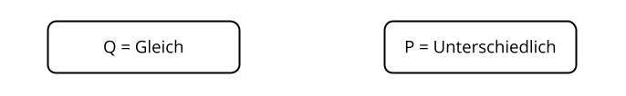

<!DOCTYPE html>
<html>
    <head>
        <title>Experiment</title>
	<meta charset="UTF-8">
	<!-- <script type="text/javascript" src="jspsych/jquery-3.7.1.js"></script> -->
         <script type="text/javascript" src="jspsych/jspsych.js"></script>
 <link rel="stylesheet" type="text/css" href="jspsych/jspsych.css" />
	 <script type="text/javascript" src="jspsych/plugin-html-keyboard-response.js"></script>
         <script type="text/javascript" src="jspsych/plugin-html-button-response.js"></script>
         <script type="text/javascript" src="jspsych/plugin-audio-keyboard-response.js"></script>
         <script type="text/javascript" src="jspsych/plugin-audio-button-response.js"></script>
         <script type="text/javascript" src="jspsych/plugin-survey-html-form.js"></script>
         <script type="text/javascript" src="jspsych/plugin-survey-multi-choice.js"></script>
         <script type="text/javascript" src="jspsych/plugin-image-keyboard-response.js"></script>
	 <script type="text/javascript" src="jspsych/plugin-preload.js"></script>
	 <script type="text/javascript" src="jspsych/jspsych-7-pavlovia-2022.1.1.js"></script>

    </head>
    <body></body>
    <script>
// type="text/javascript">

 var jsPsych = initJsPsych({
show_progress_bar: true,
auto_update_progress_bar: false,
  use_webaudio: false,
  override_safe_mode: true,
on_finish: function() {
    jsPsych.data.displayData();
  }
});

var timeline = [];

 var pavlovia_init = {
   type: jsPsychPavlovia, //"pavlovia", 
    command: "init"

};

//timeline.push(pavlovia_init);

var preload = {
  type: jsPsychPreload,
  images: images,
  audio: audio
};
timeline.push(preload);

var n_screens = 206;

var subject_id = jsPsych.randomization.randomID(4);

jsPsych.data.addProperties({
  subject: subject_id,
});

/* init connection with pavlovia.org */

var prolificnum = {
	type: jsPsychSurveyHtmlForm,
    preamble: '<div class="myDiv"><p>Bitte tragen Sie Ihre Prolific-Identifikationsnummer ein:</p></div>',
	html: '<div class="myDiv"><input required name="code" type="text" /></div><br>',
    button_label: 'Start',
	on_finish: function() {
	var curr_progress_bar_value = jsPsych.getProgressBarCompleted();
        jsPsych.setProgressBar(curr_progress_bar_value + (1/n_screens));
 }
};

//timeline.push(prolificnum);
	    
  var welcome = {
	type: jsPsychHtmlButtonResponse,
    stimulus: '<h2>Willkommen zum Experiment!</h2>' + 
    '<div class="myDiv"><p>Vielen Dank f&uuml;r Ihr Interesse an dieser Studie. '+
    'Wir bitten Sie <strong>Kopfh&ouml;rer</strong> daf&uuml;r zu verwenden.</p></div>' +
'<div></div>'+
    '<div class="myDiv"><p>Das Experiment besteht aus zwei Teilen:</p>' +
    ' <ol> <li>Eine <strong>Unterscheidungsaufgabe,</strong> in der Sie zwei W&ouml;rter h&ouml;ren. Im Anschluss sollen Sie feststellen, ob diese W&ouml;rter gleich oder unterschiedlich sind;</li>' +
  '<li>Eine <strong>Identifikationsaufgabe,</strong> in der Sie nur ein Wort h&ouml;ren, wobei Ihnen aber zwei Bilder gezeigt werden. Ihre Aufgabe ist es, dasjenige Bild auszuw&auml;hlen, das das geh&ouml;rte Wort darstellt.</li> </ol>' +  

    '<p>Wir bitten Sie um Ihre Zustimmung, bevor wir Ihre Daten sammeln und verwenden. Bitte klicken Sie auf den "Start"-Button, um Ihre Zustimmung zu geben. Anschlie&szlig;end werden wir ein paar Fragen zu Ihren Sprachkenntnissen stellen. Danach k&ouml;nnen Sie das Experiment starten. </p></div>',
    choices: ['Start'],
	on_finish: function() {
        var curr_progress_bar_value = jsPsych.getProgressBarCompleted();
        jsPsych.setProgressBar(curr_progress_bar_value + (1/n_screens));
   }
};

timeline.push(welcome);

var zustimmung = {
    type: jsPsychSurveyHtmlForm,
    preamble: '<h2>Einverst&auml;ndniserkl&auml;rung zur Teilnahme an der Forschungsstudie</h2>' +
'<div class="myDiv"><p>Sie werden gebeten, an einer Forschungsstudie teilzunehmen. Bevor Sie der Teilnahme zustimmen, muss der/die Leiter/in des Experiments Sie &uuml;ber (a) den Zweck, Ablauf und die Dauer der Studie, (b) etwaige Risiken, Unannehmlichkeiten und Vorteile der Studie, (c) die Datenschutzbestimmungen informieren. Diese Infos k&ouml;nnen Sie <a href="https://cloud.uni-konstanz.de/index.php/s/Ms6GXNi3LQgcwpP" target="_blank">hier</a> herunterladen (Link wird in einem neuen Fenster ge&ouml;ffnet)</p></div>' +
'<h3>Teilnehmer/in</h3>' +
'<div class="myDiv"><p>Hiermit best&auml;tige ich, dass ich &uuml;ber die Ziele, Methoden und Auswirkungen der aktuellen Studie, sowie &uuml;ber die Art der Teilnahme und m&ouml;gliche Risiken informiert wurde. Ich habe das Informationsblatt gelesen und verstanden. Ich best&auml;tige, dass meine Teilnahme an der Studie freiwillig erfolgt und nehme das Recht, meine Zustimmung jederzeit zur&uuml;ckzuziehen, zur Kenntnis. Verweigerung oder Abbruch werden mir keine Nachteile bringen.</p></div>',
    html: '<input name="zustimmung" type="checkbox" id="zustimmung" required> <label for="zustimmung"> Hiermit stimme ich der Teilnahme an der Studie zu.</label><div style="height:20px; width:100%"></div>',
button_label: 'OK',
	on_finish: function() {
        var curr_progress_bar_value = jsPsych.getProgressBarCompleted();
        jsPsych.setProgressBar(curr_progress_bar_value + (1/n_screens));
   }
};

timeline.push(zustimmung);

var Sprachkentnisse1 = {
    type: jsPsychSurveyMultiChoice,
    preamble: '<h2>Sprachkenntnisse</h2>',
    questions: [{
      prompt: 'Ist Deutsch Ihre Muttersprache? Wenn Sie "Nein" antworten, gelangen Sie zur n&auml;chsten Seite, in der wir noch ein paar Fragen zu Ihren Sprachkenntnissen stellen. Sonst gelangen Sie direkt zum Experiment.',
      options: ["Ja", "Nein", "Ja, aber Spanisch oder Italienisch auch (ich bin mit beiden Sprachen aufgewachsen)", "Ich bin mit Deutsch und einer zweiten Sprache, die nicht Spanisch oder Italienisch ist, aufgewachsen"], required: true
    }],
    data: {trial: 'Sprachkentnisse1'},
 on_finish: function() {
        var curr_progress_bar_value = jsPsych.getProgressBarCompleted();
        jsPsych.setProgressBar(curr_progress_bar_value + (1/n_screens));
    }
}

//timeline.push(Sprachkentnisse1);

var Sprachkentnisse2 = {
    type: jsPsychSurveyHtmlForm,
    preamble: '<h2>Sprachkenntnisse</h2>' +
'<div class="myDiv"><p>Sie haben in Prolific festgestellt, dass Englisch Ihre Muttersprache ist. Bitte beantworten Sie folgende Fragen, bevor Sie mit dem Experiment fortfahren.</p></div>',
    html: '<div style="height:20px; width:100%"></div><div style="height: 10%;  margin-left:15%; text-align:left">' + 
    '<ol><li>Ist Englisch ihre <strong>einzige</strong> Muttersprache? Wenn ja, schreiben Sie bitte "Englisch". Wenn Sie mit zwei oder drei Sprachen aufgewachsen sind, schreiben Sie bitte alle die Sprachen auf. <input required name="native" type="text" /></li><br>' +
      '<li>Wie alt waren Sie, als Sie angefangen haben, Deutsch zu lernen? <input required name="AOL" type="text" /></li><br>' +
     '<li>Wie haben Sie Deutsch gelernt? (Sie k&ouml;nnen mehr als eine Option ausw&auml;hlen) <br><input name="LearnType1" type= "checkbox" id="classeshome" value="classeshome"> <label for="classeshome">Ich habe einen Deutschkurs in meinem Heimatland besucht</label><br><input name="LearnType2" type= "checkbox" id="selflearn" value="selflearn"> <label for="selflearn">Selbstlernen (z.B. mit Filmen, Podcasts, B&uuml;chern, oder einer Selbstlernmethode)</label><br><input name="LearnType3" type= "checkbox" id="lgeschool" value="lgeschool"> <label for="lgeschool">Ich habe einen Sprachschule in meinem Heimatland besucht</label><br><input name="LearnType4" type= "checkbox" id="uni" value="uni"> <label for="uni">Ich habe Deutsch an der Universit&auml;t studiert (ich habe einen Abschluss in Deutsch). </label><br><input name="LearnType5" type= "checkbox" id="classesabroad" value="classesabroad"> <label for="classesabroad">Ich habe einen Deutschkurs in einem deutschsprachigen Land besucht</label><br><input name="LearnType6" type= "checkbox" id="immersion" value="immersion"> <label for="immersion">Ich bin in ein deutschsprachiges Land gezogen und lernte die Sprache durch Immersion</label></li><br>' + 
     '<li>Wenn Sie mehr als eine Option gew&auml;hlt haben: Welche Methode war f&uuml;r Sie am wirksamsten? <input name="which" type="text" /></li><br>' +
     '<li>Wenn Sie in einem deutschsprachigen Land wohnen oder gewohnt haben, wie alt waren Sie als sie dort hingezogen sind? <input name="AOA" type="text" /></li><br>' + 
     '<li>Wenn Sie in einem deutschsprachigen Land wohnen oder gewohnt haben, wie lange haben Sie dort gewohnt? <input name="timespent" type="text" /></li><br></li></ol></div>' +
     '<div style="height: 7%;  margin-left:15%; text-align:left"> <p>Vielen Dank! Bitte klicken Sie auf OK, um fortzufahren.</p> <div style="height:10px; width:100%"></div></div>',

button_label: 'OK',
on_finish: function() {
     var curr_progress_bar_value = jsPsych.getProgressBarCompleted();
     jsPsych.setProgressBar(curr_progress_bar_value + (1/n_screens));
    }
}

timeline.push(Sprachkentnisse2);

var audiotest = {
  timeline: [{
    type: jsPsychAudioButtonResponse,
   prompt: '<p>Bitte &uuml;berpr&uuml;fen sie die Lautst&auml;rke Ihres Computers.</p><br>',
    stimulus: 'audio_projekt/treffen1.wav',
    choices: ['Wort wiederholen', 'Fortsetzen'],
  }],
on_finish: function() {
      var curr_progress_bar_value = jsPsych.getProgressBarCompleted();
      jsPsych.setProgressBar(curr_progress_bar_value + (1/n_screens));
    },
  loop_function: function(data){
	//console.log("last loop data: ", jsPsych.data.get().last(1).values()[0]);
	if(jsPsych.data.get().last(1).values()[0].response == 0) {
     return true; // loop again!
   } else {
     return false; // continue
    }
  }
};

timeline.push(audiotest);

var instructions1 = {
      type: jsPsychHtmlKeyboardResponse,
      stimulus: '<h2>Teil 1: Unterscheidungsaufgabe</h2>' +  
	'<div class="myDiv"><p>In diesem Teil des Experimentes werden Sie im Abstand von 1.5 Sekunden <b>zwei W&ouml;rter</b> h&ouml;ren.</p>' +
          '<ul><li>Ihre Aufgabe ist es, festzustellen, ob diese W&ouml;rter <b>gleich oder unterschiedlich</b> sind. Wenn es einen Unterschied gibt, besteht dieser nur aus einem Vokal. </li> <li>Dr&uuml;cken Sie die <b>Taste Q</b>, wenn die W&ouml;rter gleich sind. Dr&uuml;cken Sie die <b>Taste P</b>, wenn die W&ouml;rter unterschiedlich sind.</li><li>Bitte warten Sie, bis Sie <b>beide Wörter gehört haben</b>, bevor Sie eine Taste drücken. Aber Achtung: Sie haben nur <b>5 Sekunden</b>, um eine Option auszuw&auml;hlen! &Uuml;berlegen Sie daher bitte nicht zu lange.</li></ul><br><p>Dr&uuml;cken Sie eine beliebige Taste, um ein paar Testversuche zu machen.</p></ul></div>',
	on_finish: function() {
      var curr_progress_bar_value = jsPsych.getProgressBarCompleted();
      jsPsych.setProgressBar(curr_progress_bar_value + (1/n_screens));
    }
};

timeline.push(instructions1);

var testing_stimuli = [
{probstims: 'audio_projekt/treffen1500triefen.wav'},
{probstims: 'audio_projekt/treffen1500treffen.wav'}
]

var testfix = {
      type: jsPsychAudioKeyboardResponse,
      stimulus: jsPsych.timelineVariable('probstims'),
      prompt: '<p style="text-align:center">Sind die W&ouml;rter gleich oder unterschiedlich?</p><div style="height:20px; width:100%"></div><div> </div>',
      //'<div style="font-size:60px;">+</div>',
      choices: "NO_KEYS",
      trial_ends_after_audio: true
}

var testtest = {
      type: jsPsychHtmlKeyboardResponse,
      trial_duration: 5000,
     post_trial_gap: 800,
      stimulus: '<div></div>',
      choices: ['p', 'q' ],
      prompt: '<p style="text-align:center">Sind die W&ouml;rter gleich oder unterschiedlich?</p><div style="height:20px; width:100%"></div><div> </div>',
      on_finish: function() {
        var curr_progress_bar_value = jsPsych.getProgressBarCompleted();
        jsPsych.setProgressBar(curr_progress_bar_value + (1/n_screens));
    }
}

var testing_proc = {
    timeline: [testfix, testtest],
    timeline_variables: testing_stimuli
}

timeline.push(testing_proc);

var boilerplate2 = {
      type: jsPsychHtmlKeyboardResponse,
      stimulus: '<p>Gut! Jetzt f&auml;ngt der erste Teil des Experiments an. Dieser Teil dauert ca. 10 Minuten.</p><br><p>Bitte dr&uuml;cken Sie eine beliebige Taste, um fortzufahren.<div style="height:30px; width:100%"></div>',
      on_finish: function(){
        var curr_progress_bar_value = jsPsych.getProgressBarCompleted();
        jsPsych.setProgressBar(curr_progress_bar_value + (1/n_screens));
    }
};

timeline.push(boilerplate2);

var test_stimuli = [
{stims: 'audio_projekt/blueten1500blueten.wav'},//u-&uuml; contrast
{stims: 'audio_projekt/blueten1500bluten.wav'},
{stims: 'audio_projekt/bluten1500blueten.wav'},
{stims: 'audio_projekt/bluten1500bluten.wav'},
{stims: 'audio_projekt/spuelen1500spuelen.wav'},
{stims: 'audio_projekt/spuelen1500spulen.wav'},
{stims: 'audio_projekt/spulen1500spuelen.wav'},
{stims: 'audio_projekt/spulen1500spulen.wav'},
{stims: 'audio_projekt/tour1500tour.wav'},
{stims: 'audio_projekt/tour1500tuer.wav'},
{stims: 'audio_projekt/tuer1500tour.wav'},
{stims: 'audio_projekt/tuer1500tuer.wav'},
{stims: 'audio_projekt/biene1500biene.wav'},//i-&uuml; contrast
{stims: 'audio_projekt/biene1500buehne.wav'},
{stims: 'audio_projekt/buehne1500biene.wav'},
{stims: 'audio_projekt/buehne1500buehne.wav'},
{stims: 'audio_projekt/kiel1500kiel.wav'},
{stims: 'audio_projekt/kiel1500kuehl.wav'},
{stims: 'audio_projekt/kuehl1500kiel.wav'},
{stims: 'audio_projekt/kuehl1500kuehl.wav'},
{stims: 'audio_projekt/spielen1500spielen.wav'},
{stims: 'audio_projekt/spielen1500spuelen.wav'},
{stims: 'audio_projekt/spuelen1500spielen.wav'},
{stims: 'audio_projekt/tier1500tier.wav'},//i-u contrast
{stims: 'audio_projekt/tier1500tour.wav'},
{stims: 'audio_projekt/tour1500tier.wav'},
{stims: 'audio_projekt/spulen1500spielen.wav'},
{stims: 'audio_projekt/spielen1500spulen.wav'},
{stims: 'audio_projekt/stiel1500stiel.wav'},
{stims: 'audio_projekt/stiel1500stuhl.wav'},
{stims: 'audio_projekt/stuhl1500stiel.wav'},
{stims: 'audio_projekt/stuhl1500stuhl.wav'},
{stims: 'audio_projekt/leder1500leder.wav'},//i-e or E contrast
{stims: 'audio_projekt/leder1500lieder.wav'},
{stims: 'audio_projekt/lieder1500leder.wav'},
{stims: 'audio_projekt/lieder1500lieder.wav'},
{stims: 'audio_projekt/segel1500segel.wav'},
{stims: 'audio_projekt/segel1500siegel.wav'},
{stims: 'audio_projekt/siegel1500segel.wav'},
{stims: 'audio_projekt/siegel1500siegel.wav'}
];

var fixation = {
      type: jsPsychAudioKeyboardResponse,
      stimulus: jsPsych.timelineVariable('stims'),
      prompt: '<p style="text-align:center">Sind die W&ouml;rter gleich oder unterschiedlich?</p><div style="height:20px; width:100%"></div><div> </div>',
      //'<div style="font-size:60px;">+</div>',
      choices: "NO_KEYS",
      trial_ends_after_audio: true
      //trial_duration: jsPsych.timelineVariable('time')
}
      
 
var test = {
      type: jsPsychHtmlKeyboardResponse,
      trial_duration: 5000,
     post_trial_gap: 800,
      stimulus: '<div></div>',
      choices: ['p', 'q' ],
      prompt: '<p style="text-align:center">Sind die W&ouml;rter gleich oder unterschiedlich?</p><div style="height:20px; width:100%"></div><div> </div>',
    on_finish: function() {
        //at the end of each trial, update the progress bar
        // based on the current value and the proportion to update for each trial
        var curr_progress_bar_value = jsPsych.getProgressBarCompleted();
        jsPsych.setProgressBar(curr_progress_bar_value + (1/n_screens));
    }
}

var discr_proc = {
    timeline: [fixation, test],
    timeline_variables: test_stimuli,
   	sample: {
        type: 'fixed-repetitions',
        size: 2 //2 repetitions of each trial, 12 total trials, order is randomized.
    }
}

  
timeline.push(discr_proc);
     

var pause = {
      type: jsPsychHtmlKeyboardResponse,
      stimulus: '<h2>Pause</h2>' +  
  '<div class="myDiv"><p>Gut gemacht! Jetzt k&ouml;nnen Sie eine kleine Pause machen.</p></div>'+
  '<div></div>'+
  '<div style="height:20px; width:100%"></div>' +
  '<p>Wenn Sie bereit sind, dr&uuml;cken Sie eine beliebige Taste, um fortzufahren.</p>',
      on_finish: function(){
        var curr_progress_bar_value = jsPsych.getProgressBarCompleted();
        jsPsych.setProgressBar(curr_progress_bar_value + (1/n_screens));
    }
};

timeline.push(pause);

var instructions2 = {
      type: jsPsychHtmlKeyboardResponse,
      stimulus: '<h2>Teil 2: Identifikationsaufgabe: Vorbereitung 1</h2>' +  
  '<div class="myDiv"><p>In diesem Teil des Experimentes werden Sie nur ein Wort h&ouml;ren. </p>'+
  '<p>Anschlie&szlig;end werden zwei Bilder gezeigt. W&auml;hlen Sie das Bild aus, das das Wort darstellt.</p>'+
  '<p>Bevor die Aufgabe beginnt, werden die Bilder mit den entsprechenden W&ouml;rtern angezeigt. Sie werden jedes Bild zweimal sehen.</p>'+
'<p>Dr&uuml;cken Sie bitte eine beliebige Taste, um die Bilder zu sehen.</p>',
      on_finish: function(){
       var curr_progress_bar_value = jsPsych.getProgressBarCompleted();
      jsPsych.setProgressBar(curr_progress_bar_value + (1/n_screens));
}
};

timeline.push(instructions2)

var training = [
{stimsnoresp: 'audio_projekt/blueten.wav', picnr: 'pics/scaled/blueten2.jpg'},
{stimsnoresp: 'audio_projekt/beten1.wav', picnr: 'pics/scaled/beten2.jpg'},
{stimsnoresp: 'audio_projekt/tuer.wav', picnr: 'pics/scaled/tuer2.jpg'},
{stimsnoresp: 'audio_projekt/bluten.wav', picnr: 'pics/scaled/bluten2.jpg'},
{stimsnoresp: 'audio_projekt/buehne.wav', picnr: 'pics/scaled/buehne2.jpg'},
{stimsnoresp: 'audio_projekt/leder.wav', picnr: 'pics/scaled/leder2.jpg'},
{stimsnoresp: 'audio_projekt/bieten1.wav', picnr: 'pics/scaled/bieten2.jpg'},
{stimsnoresp: 'audio_projekt/spulen.wav', picnr: 'pics/scaled/spulen2.jpg'},
{stimsnoresp: 'audio_projekt/biene.wav', picnr: 'pics/scaled/biene2.jpg'},
{stimsnoresp: 'audio_projekt/segel.wav', picnr: 'pics/scaled/segel2.jpg'},
{stimsnoresp: 'audio_projekt/stuhl.wav', picnr: 'pics/scaled/stuhl2.jpg'},
{stimsnoresp: 'audio_projekt/tier.wav', picnr: 'pics/scaled/tier2.jpg'},
{stimsnoresp: 'audio_projekt/treffen2.wav', picnr: 'pics/scaled/treffen2.jpg'},
{stimsnoresp: 'audio_projekt/stiel.wav', picnr: 'pics/scaled/stiel2.jpg'},
{stimsnoresp: 'audio_projekt/siegel.wav', picnr: 'pics/scaled/siegel2.jpg'},
{stimsnoresp: 'audio_projekt/tour.wav', picnr: 'pics/scaled/tour2.jpg'},
{stimsnoresp: 'audio_projekt/lieder.wav', picnr: 'pics/scaled/lieder2.jpg'},
{stimsnoresp: 'audio_projekt/spuelen2.wav', picnr: 'pics/scaled/spuelen2.jpg'},
{stimsnoresp: 'audio_projekt/kiel.wav', picnr: 'pics/scaled/kiel2.jpg'},
{stimsnoresp: 'audio_projekt/kuehl.wav', picnr: 'pics/scaled/kuehl2.jpg'},
{stimsnoresp: 'audio_projekt/spielen2.wav', picnr: 'pics/scaled/spielen2.jpg'},
{stimsnoresp: 'audio_projekt/triefen1.wav', picnr: 'pics/scaled/triefen2.png'}
];

var imagetraining = {
    type: jsPsychAudioButtonResponse,
    prompt: function() {
         var html = `
           <div class="box"></div>
	`;
         return html;
    },
    stimulus: jsPsych.timelineVariable('stimsnoresp'),
    choices: ['N&auml;chstes Foto'],
on_finish: function() {
        var curr_progress_bar_value = jsPsych.getProgressBarCompleted();
        jsPsych.setProgressBar(curr_progress_bar_value + (1/n_screens));
}
};

var imgtraining = {
timeline: [imagetraining],
timeline_variables: training,
randomize_order: false
 }

var trainnode = {
    timeline: [imgtraining],
    repetitions: 2
}

timeline.push(trainnode);

var boilerplate3 = {
      type: jsPsychHtmlKeyboardResponse,
      stimulus: '<h2>Teil 2: Identifikationsaufgabe: Vorbereitung 2</h2>' +  
  '<div class="myDiv"><p>Jetzt können Sie einen kurzen Probedurchlauf f&uuml;r diesen Teil des Experiments machen.</p>' +
'<p>W&auml;hlen Sie das Bild aus, das das Wort darstellt. <ul><li>Dr&uuml;cken Sie die <b>Taste Q</b>, um das <b>linke</b> Bild auszuw&auml;hlen. Dr&uuml;cken Sie die <b>Taste P</b>, um das <b>rechte</b> Bild auszuw&auml;hlen.</li> <li>Sie haben 5 Sekunden Zeit, um sich f&uuml;r eines der Bilder zu entscheiden. </li>' +
'<li>Bitte warten Sie, bis Sie <b>das ganze Wort gehört haben</b>, bevor Sie eine Taste drücken.</li></ul></p>'+
'<p>Dr&uuml;cken Sie eine beliebige Taste, um den Probedurchlauf anzufangen.</p>',
     on_finish: function(){
        var curr_progress_bar_value = jsPsych.getProgressBarCompleted();
     jsPsych.setProgressBar(curr_progress_bar_value + (1/n_screens));
    }
};

timeline.push(boilerplate3);

var testing_stimuli2 = [
{probstims2: 'audio_projekt/treffen2.wav', pic2: 'pics/scaled/triefen_treffen.png'},
{probstims2: 'audio_projekt/beten1.wav', pic2: 'pics/scaled/bieten_beten.jpg'}
]

var testfix2 = {
      type: jsPsychAudioKeyboardResponse,
      stimulus: jsPsych.timelineVariable('probstims2'),
      prompt: function(){
                var html="";
                html += "<p>Welches Wort haben Sie geh&ouml;rt?</p><div style='height:20px; width:100%'></div><div></div>";
                return html;
            },   
      choices: "NO_KEYS",
      trial_ends_after_audio: true
}

var testtest2 = {
    type: jsPsychImageKeyboardResponse,
    choices: ['p', 'q' ],
    prompt: '<p>Welches Wort haben Sie geh&ouml;rt?</p>'+
  '<div style="height:20px; width:100%"></div>' + 
  '<div> </div>',
    trial_duration: 5000,
    post_trial_gap: 800,
    stimulus: jsPsych.timelineVariable('pic2'),
   // stimulus_height: 250,
   // stimulus_width: 767,
  on_finish: function() {
        // at the end of each trial, update the progress bar
        // based on the current value and the proportion to update for each trial
     var curr_progress_bar_value = jsPsych.getProgressBarCompleted();
     jsPsych.setProgressBar(curr_progress_bar_value + (1/n_screens));
}
}

var testing2_proc = {
    timeline: [testfix2, testtest2],
    timeline_variables: testing_stimuli2
}

timeline.push(testing2_proc);

var startident = {
      type: jsPsychHtmlKeyboardResponse,
      stimulus: '<h2>Teil 2: Identifikationsaufgabe</h2>' +  
  '<p>Jetzt sind Sie darauf vorbereitet, die Identifikationsaufgabe auszuführen.</p>'+
  '<p>Sind Sie bereit? Dann dr&uuml;cken Sie eine beliebige Taste, um anzufangen.</p>',
    on_finish: function(){
     var curr_progress_bar_value = jsPsych.getProgressBarCompleted();
       jsPsych.setProgressBar(curr_progress_bar_value + (1/n_screens));
  }
};

timeline.push(startident);

var ident_stimuli = [
{stimulus2: 'audio_projekt/blueten.wav', pic: 'pics/scaled/bluten_blueten.jpg'},
{stimulus2: 'audio_projekt/bluten.wav', pic: 'pics/scaled/bluten_blueten.jpg'},
{stimulus2: 'audio_projekt/spuelen2.wav', pic: 'pics/scaled/spulen_spuelen.jpg'},
{stimulus2: 'audio_projekt/spulen.wav', pic: 'pics/scaled/spulen_spuelen.jpg'},
{stimulus2: 'audio_projekt/tour.wav', pic: 'pics/scaled/tuer_tour.jpg'},
{stimulus2: 'audio_projekt/tuer.wav', pic: 'pics/scaled/tuer_tour.jpg'},
{stimulus2: 'audio_projekt/biene.wav', pic: 'pics/scaled/biene_buehne.png'},
{stimulus2: 'audio_projekt/buehne.wav', pic: 'pics/scaled/biene_buehne.png'},
{stimulus2: 'audio_projekt/kiel.wav', pic: 'pics/scaled/kiel_kuehl.jpg'},
{stimulus2: 'audio_projekt/kuehl.wav', pic: 'pics/scaled/kiel_kuehl.jpg'},
{stimulus2: 'audio_projekt/spielen.wav', pic: 'pics/scaled/spielen_spuelen.jpg'},
{stimulus2: 'audio_projekt/spuelen2.wav', pic: 'pics/scaled/spielen_spuelen.jpg'},
{stimulus2: 'audio_projekt/tier.wav', pic: 'pics/scaled/tier_tour.jpg'},
{stimulus2: 'audio_projekt/tour.wav', pic: 'pics/scaled/tier_tour.jpg'},
{stimulus2: 'audio_projekt/spielen2.wav', pic: 'pics/scaled/spielen_spulen.jpg'},
{stimulus2: 'audio_projekt/spulen.wav', pic: 'pics/scaled/spielen_spulen.jpg'}, 
{stimulus2: 'audio_projekt/stiel.wav', pic: 'pics/scaled/stiel2_stuhl.jpg'},
{stimulus2: 'audio_projekt/stuhl.wav', pic: 'pics/scaled/stiel2_stuhl.jpg'},
{stimulus2: 'audio_projekt/leder.wav', pic: 'pics/scaled/lieder_leder.jpg'},
{stimulus2: 'audio_projekt/lieder.wav', pic: 'pics/scaled/lieder_leder.jpg'},
{stimulus2: 'audio_projekt/siegel.wav', pic: 'pics/scaled/siegel_segel.jpg'},
{stimulus2: 'audio_projekt/segel.wav', pic: 'pics/scaled/siegel_segel.jpg'}
];

var fixation2 = {
      type: jsPsychAudioKeyboardResponse,
      stimulus: jsPsych.timelineVariable('stimulus2'),
      prompt: function(){
                var html="";
                html += "<p>Welches Wort haben Sie geh&ouml;rt?</p><div style='height:20px; width:100%'></div><div></div>";
                return html;
            },   
      choices: "NO_KEYS",
      trial_ends_after_audio: true
   
}

var test2 = {
    type: jsPsychImageKeyboardResponse,
    choices
: ['p', 'q' ],
    prompt: '<p>Welches Wort haben Sie geh&ouml;rt?</p>'+
  '<div style="height:20px; width:100%"></div>' + 
  '<div> </div>',
    trial_duration: 5000,
    post_trial_gap: 800,
    stimulus: jsPsych.timelineVariable('pic'),
 //   stimulus_height: 250,
   // stimulus_width: 767,
  on_finish: function() {
     var curr_progress_bar_value = jsPsych.getProgressBarCompleted();
     jsPsych.setProgressBar(curr_progress_bar_value + (1/n_screens));
  }
}
var ident_proc = {
      timeline: [fixation2, test2],
      timeline_variables: ident_stimuli,
     sample: {
        type: 'fixed-repetitions',
        size: 3 // 3 repetitions of each trial, 12 total trials, order is randomized.
    }
 }

timeline.push(ident_proc);

var pavlovia_finish = {
   type: jsPsychPavlovia, //"pavlovia"
  command: "finish",
   participantId: subject_id
  };

//timeline.push(pavlovia_finish);

      var goodbye_screen = {
type: jsPsychHtmlButtonResponse,
    stimulus: '<h2>Vielen Dank! / Thank you! </h2>' + 
    '<div class="myDiv"><p>Your payment will be processed by Prolific now. Please click on the link below to be redirected to Prolific (link will open in a new tab). After that, click on "Finish Survey".</p></div><br>' +
	'<p> <a href="https://app.prolific.com/submissions/complete?cc=CPL0DDMA" target="_blank">To Prolific</a> </p><br><br><br>',
    choices: ['Finish survey'],
        on_finish: function(data){
          jsPsych.endExperiment('Thank you. You may close this window.')
   
  }
};

timeline.push(goodbye_screen);


var audio = [
'audio_projekt/blueten.wav',
'audio_projekt/blueten1500blueten.wav', // y-y
'audio_projekt/blueten1500bluten.wav', // y-u 
'audio_projekt/bluten.wav',
'audio_projekt/bluten1500blueten.wav', // y-u
'audio_projekt/bluten1500bluten.wav', // u-u
'audio_projekt/spuelen1500spuelen.wav', // y-y
'audio_projekt/spuelen1500spulen.wav', // y-u
'audio_projekt/spulen.wav',
'audio_projekt/spulen1500spuelen.wav', // y-u
'audio_projekt/spulen1500spulen.wav', // u-u
'audio_projekt/spuelen2.wav',
'audio_projekt/tour.wav',
'audio_projekt/tour1500tour.wav', // u-u
'audio_projekt/tour1500tuer.wav', // y-u
'audio_projekt/tuer.wav',
'audio_projekt/tuer1500tour.wav', // y-u
'audio_projekt/tuer1500tuer.wav', // y-y
'audio_projekt/buehne.wav',
'audio_projekt/biene.wav',
'audio_projekt/buehne1500biene.wav', // y-i
'audio_projekt/buehne1500buehne.wav', // y-y
'audio_projekt/biene1500biene.wav', // i-i
'audio_projekt/biene1500buehne.wav', // y-i
'audio_projekt/kiel.wav',
'audio_projekt/kiel1500kiel.wav', // i-i
'audio_projekt/kiel1500kuehl.wav', // y-i
'audio_projekt/kuehl.wav',
'audio_projekt/kuehl1500kiel.wav', // y-i
'audio_projekt/kuehl1500kuehl.wav', // y-y
'audio_projekt/spielen.wav',
'audio_projekt/spielen1500spielen.wav', // i-i
'audio_projekt/spielen1500spuelen.wav', // y-i
'audio_projekt/spielen2.wav',
'audio_projekt/spuelen1500spielen.wav', // y-i
'audio_projekt/tier.wav',
'audio_projekt/tour1500tier.wav', // i-u
'audio_projekt/tier1500tier.wav', // i-i
'audio_projekt/tier1500tour.wav', // i-u
'audio_projekt/spulen1500spielen.wav', // i-u
'audio_projekt/spielen1500spulen.wav', // i-u
'audio_projekt/stiel.wav',
'audio_projekt/stiel1500stiel.wav', // i-i
'audio_projekt/stiel1500stuhl.wav', // i-u
'audio_projekt/stuhl.wav',
'audio_projekt/stuhl1500stiel.wav', // i-u
'audio_projekt/stuhl1500stuhl.wav', // u-u
'audio_projekt/leder.wav',	
'audio_projekt/leder1500leder.wav', // e-e
'audio_projekt/leder1500lieder.wav', // e-i
'audio_projekt/lieder.wav',
'audio_projekt/lieder1500leder.wav', // e-i
'audio_projekt/lieder1500lieder.wav', // i-i
'audio_projekt/segel.wav',
'audio_projekt/segel1500segel.wav', // e-e
'audio_projekt/segel1500siegel.wav', // e-i
'audio_projekt/siegel.wav',
'audio_projekt/siegel1500segel.wav', // e-i
'audio_projekt/siegel1500siegel.wav', // i-i
'audio_projekt/treffen1500treffen.wav',
'audio_projekt/treffen1500triefen.wav',
'audio_projekt/treffen2.wav',
'audio_projekt/triefen1.wav',
'audio_projekt/beten1.wav',
'audio_projekt/bieten1.wav'
];

var images = [
'pics/scaled/bluten2.jpg',
'pics/scaled/blueten2.jpg',
'pics/scaled/bieten2.jpg',
'pics/scaled/beten2.jpg',
'pics/scaled/biene2.jpg',
'pics/scaled/buehne2.jpg',
'pics/scaled/stuhl2.jpg',
'pics/scaled/stiel2.jpg',
'pics/scaled/siegel2.jpg',
'pics/scaled/segel2.jpg',
'pics/scaled/tier2.jpg',
'pics/scaled/tuer2.jpg',
'pics/scaled/tour2.jpg',
'pics/scaled/leder2.jpg',
'pics/scaled/lieder2.jpg',
'pics/scaled/spuelen2.jpg',
'pics/scaled/spielen2.jpg',
'pics/scaled/spulen2.jpg',
'pics/scaled/kiel2.jpg',
'pics/scaled/kuehl2.jpg',
'pics/scaled/treffen2.jpg',
'pics/scaled/triefen2.png',
'pics/scaled/bluten_blueten.jpg', //u-y
'pics/scaled/spulen_spuelen.jpg', //u-y
'pics/scaled/tuer_tour.jpg', //u-y
'pics/scaled/biene_buehne.png', //i -y
'pics/scaled/kiel_kuehl.jpg', //i -y
'pics/scaled/spielen_spuelen.jpg', //i -y
'pics/scaled/tier_tour.jpg', // i - u
'pics/scaled/spielen_spulen.jpg', // i - u
'pics/scaled/stiel_stuhl.jpg', // i - u
'pics/scaled/lieder_leder.jpg', // i -e 
'pics/scaled/siegel_segel.jpg', // i - e
'pics/scaled/triefen_treffen.png',
'pics/scaled/bieten_beten.jpg', // i - e
'pics/buttons.jpg', 'pics/buttons2.png', 'pics/coffee.png'];


jsPsych.run(timeline);

    </script>
</html>
